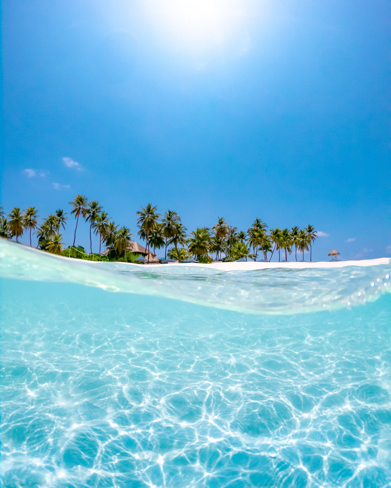

Why the beaches in Bali is famous?
The most popular beaches in Bali attract travelers with their impressive landscape, clear waters, and a wide range of activities.
Which God is worshipped in Bali?
There are plenty of different gods in Balinese culture and religion, the three major ones being Brahma, Shiva and Vishnu.
Is Bali cheap country?
Bali is a super budget-friendly destination, so it's pretty easy to visit the island and not have to worry about breaking the bank. Though often busy with tourists, Bali is still surprisingly affordable if you know where to look.